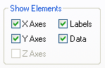
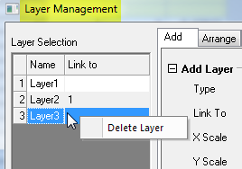

Hiding or Deleting Layers, Plots and Objects in the Graph
Labels-Data-Layer-Hide
You can hide or delete various elements in the graph page.
- Hiding an element is temporary and can be easily reversed.
- Deleting is permanent and is not always reversible by Edit: Undo.
Note that when you hide elements, they are not included in any type of output. So, one reason for "hiding" might be to temporarily remove elements from your graph when printing or creating graphic export files.
Hiding Graph Layers
To hide all layers except the active graph layer:
- Select View: Show: Active Layer Only or right-click on a graph layer icon and choose Hide Other Layers.
- To display all layers, re-select View: Show: Active Layer Only or Hide Other Layers.

To re-display a hidden layer
- To re-display a specific layer, right-click on a dimmed icon and clear the Hide Layer check mark.
To hide a specific graph layer:
- Right-click on a layer icon and select Hide Layer from the shortcut menu. To display the layer, right-click on the dimmed icon and and re-select Hide Layer.
- In the left-panel of Plot Details, clear the check mark beside the layer icon. Re-select to display.
- In the Object Manager panel, clear the check mark beside the layer. Re-select to display.

Hiding Data Plots
To hide or show data plots:
- Right-click on a data plot and select Hide Data Plot or Hide Others from the shortcut menu.And, then right-click one plot, choose Show Others shortcut menu to show all plots back.
- In the Plot Details dialog box, clear or check the box next to the data plot.
- In the Object Manager panel, clear or check box next to the data plot. Or use the contect menu to show and hide plots.
To hide or show all data plots on the page:
- Clear the check mark beside the View: Show: Data menu command.
- To view the data plots, re-select the View: Show: Data menu command (data plots are displayed when this menu command is checked). Alternately, right-click in the layer and select Show All Data from the shortcut menu.
Note that if you are looking for a way to separate plots in a single-layer graph, there is a procedure for extracting each plot to a separate layer. See, Arranging Graphs and Layers.
Hiding Other Elements in the Graph Layer
Hiding labels
- De-select the View: Show: Labels menu command. Labels (axis titles, legends, text and drawing objects) display when this menu command is checked.
To view the labels, re-select View: Show: Labels.
|
Note: To print a graph with hidden labels (and other objects), re-select the View: Show: Labels menu command before printing.
|
Hiding axes, labels and plots in Plot Details
The Display tab of the Plot Details dialog box also provides layer-level controls for hiding or displaying certain elements (Format: Layer):

There are slight differences in the scope of control -- the Plot Details dialog box hides or shows all axes, all labels, and all data plots without exception -- but the end effect is much the same as hiding these elements using the View or shortcut menu commands available when these elements are selected. Elements hidden via these Plot Details controls are not printed or exported.
Deleting Graph Layers
To delete a graph layer:
- Right-click on the graph layer icon and choose Delete Layer.
- Click to select the layer (the layer frame will display green selection handles), then press the Delete key.
- To delete layers from the Layer Management dialog, right-click on a layer in the left-hand panel and choose Delete Layer.

Note that when you delete a graph layer, you delete the plots and any object that is part of that layer (graph legends, text objects, etc.). The original worksheet and matrix data are not deleted.
Deleting Data Plots
To delete data plots:
- Right-click on the data plot in the graph window or right-click on the plot in the Object Manager and choose Remove.
- Click to select a plot and press the Delete key.
- To delete plots from the Plot Details dialog box, right-click on the plot in the left-hand panel and choose Remove.
Note that these actions do not delete the original worksheet or matrix data from the project. However, deleting the original worksheet or matrix data will delete any plots of that data.
| Note: Deleting a plot that is part of a plot group will delete all plots in the group. |